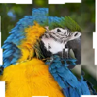

Décalage de mosaïque

Divise le calque en une grille de carreaux et fait glisser l'image de chaque carreau dans une direction aléatoire.
Réglages
| Réglage | Type | Plage | Par défaut |
|---|---|---|---|
| Force | Nombre | De 0 à 1 | 0.1 |
| Décalage | Point (X, Y) | De -5000 px à 5000 px | 0 px, 0 px |
| Nombre | Nombre | De 0.5 à 200 | 10 |
| Étirement | Point (X, Y) | De 0.01 à 10 | 1, 1 |
| Angle | Angle | De -3600° à 3600° | 0° |
| Seed | Nombre | De 0 à 5 | 0 |